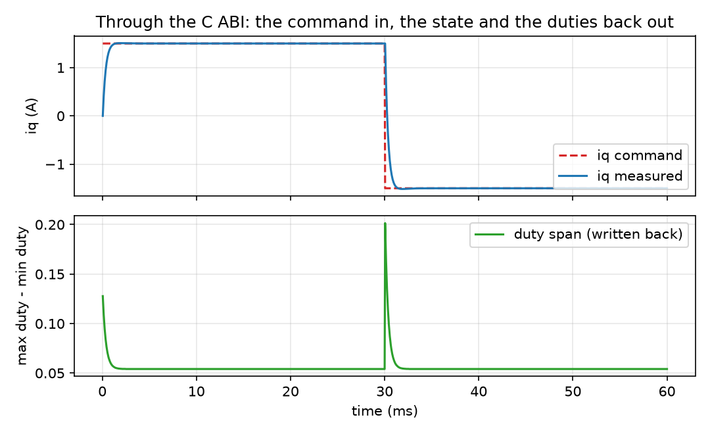

1.1.7. Consuming the library from outside C++
The task: the control law is chosen, the board is built, and the application is not C++. Get the loop running from C, from Python, or from a simulation master without reimplementing any of the earlier pages.
1.1.7.1. What you need
foc/api/foc_api.handfoc/api/foc_types.h-- the frozen C11 surface. Opaque handles, no C++ in the include graph, every return code checkable.foc_hal_callbacks_t-- the host's side of the contract: five required function pointers and a user pointer handed back unchanged.foc/comm/frame.hpp-- the wire format, for anything that talks to this library over a link rather than through a function call.foc/comm/register_map.hpp-- the register table, for hosts that speak addresses rather than structs.foc/comm/encoder_stream.hpp-- serial encoder framing (BiSS-C and its CRC-6), for the position source.api/python_bindings.cppandapi/fmu/-- the two other delivery shapes, both thin: the Python module binds the C ABI, and the FMU is the same control loop behind FMI.
1.1.7.2. A minimal program
docs/doxygen/dox/demos/c-and-cpp-callers.cxx is the whole sequence:
1// Callers -- consuming the library from C: five function pointers in, a handle
2// out, and every call after that is a plain `foc_*` function.
3//
4// ABI lives in (the repository links `src/**/*.cpp` and `src/**/*.c`; a product
5// links the aggregate target `foc::foc`):
6// Build it the way the `demo` gate does -- the example calls into the library, so the
7// sources are part of the command, and `-Iinclude` alone fails at the link. A renamed
8// source turns that gate red instead of leaving a stale instruction here:
9// g++ -std=c++17 -fno-exceptions -fno-rtti -Wall -Wextra -Werror -Iinclude
10// docs/doxygen/dox/demos/c-and-cpp-callers.cxx src/core/*.cpp
11// src/core/observer/*.cpp src/motor/*.cpp src/driver/*.cpp src/api/foc_api.c
12// src/api/bridge.cpp src/version.c
13// -o /tmp/c-and-cpp-callers
14//
15// With `--csv <path>` it writes the run as rows; `docs/demos/make_figures.py`
16// draws this example's figure from that file.
17//
18// 调用方 —— 从 C 侧使用本库：五个函数指针进去、一个句柄出来，之后每一次调用都是普通的
19// `foc_*` 函数。带 `--csv <path>` 时把这次运行写成行，供绘图脚本使用。
20
21#include <cmath>
22#include <cstdint>
23#include <cstdio>
24#include <cstring>
25
26#include <array>
27
28#include <foc/api/foc_api.h>
29#include <foc/core/observer/back_emf_observer.hpp>
30#include <foc/core/pi.hpp>
31#include <foc/core/svpwm.hpp>
32#include <foc/driver/callback_hal.hpp>
33#include <foc/motor/motor.hpp>
34#include <foc/motor/motor_config.hpp>
35
36namespace {
37
38constexpr float kDtS = 5.0e-5F; // the loop the host ticks at
39constexpr int kTicks = 1200; // 60 ms: two current steps, the same for both paths
40constexpr float kStepAtS = 0.03F;
41constexpr float kTwoPi = 6.28318530718F;
42constexpr std::uint8_t kPolePairs = 7U;
43
44/**
45 * @brief [en] The integrator's board, as plain C callbacks see it.
46 *
47 * This is a **stand-in**, not a motor model: Ohm's law across the winding
48 * plus the winding's own `L/R`, so the current loop has something to regulate
49 * and the figure has something to show. What the example is actually
50 * demonstrating is the ABI -- five function pointers in, a handle out, and the
51 * same `foc_*` calls a pure C consumer would make.
52 *
53 * @brief [zh] 集成方的板子，按普通 C 回调看到的样子。
54 *
55 * 这是一个**替身**，不是电机模型：绕组上的欧姆定律加上绕组自身的 `L/R`，好让电流环有
56 * 东西可调、图上有东西可看。例子真正演示的是 ABI——五个函数指针进去、一个句柄出来，以及
57 * 一个纯 C 消费者会做的同一批 `foc_*` 调用。
58 */
59struct Board final {
60 float duty[3]{0.5F, 0.5F, 0.5F};
61 float current_a[3]{0.0F, 0.0F, 0.0F};
62 float v_bus_v{24.0F};
63 float angle_mech_rad{0.0F};
64 float speed_mech_rad_s{0.0F};
65 float rs{0.5F}; // the winding's resistance, from the same nameplate
66 float tau_s{0.8e-3F}; // L/R of that winding: 0.4 mH over 0.5 ohm
67 int32_t faults{0};
68};
69
70void write_duty(void* user, const float duty_uvw[3]) {
71 auto* board = static_cast<Board*>(user);
72 std::memcpy(board->duty, duty_uvw, sizeof(board->duty));
73}
74
75void read_current(void* user, float uvw_a[3]) {
76 auto* board = static_cast<Board*>(user);
77 // Ohm's law across the winding, with the star point floating: the common mode
78 // of the duties drives nothing, so it is removed first. Then one first-order
79 // lag with the winding's own `L/R`. Both are identities, not a controller --
80 // this stand-in exists so the current loop has something to regulate, and the
81 // page says so.
82 // 绕组上的欧姆定律，星点浮空：占空比的共模不驱动任何东西，所以先去掉。再给它一个
83 // 绕组自身的 `L/R` 一阶滞后。两者都是恒等式而不是控制器——这个替身存在的意义是让
84 // 电流环有东西可调，页面会把这一点写明。
85 const float mean = (board->duty[0] + board->duty[1] + board->duty[2]) / 3.0F;
86 for (int phase = 0; phase < 3; ++phase) {
87 const float target = ((board->duty[phase] - mean) * board->v_bus_v) / board->rs;
88 board->current_a[phase] += (target - board->current_a[phase]) * (kDtS / board->tau_s);
89 uvw_a[phase] = board->current_a[phase];
90 }
91}
92
93auto read_angle(void* user) -> float { return static_cast<Board*>(user)->angle_mech_rad; }
94
95auto read_v_bus(void* user) -> float { return static_cast<Board*>(user)->v_bus_v; }
96
97auto read_fault(void* user) -> int32_t { return static_cast<Board*>(user)->faults; }
98
99/**
100 * @brief [en] The same experiment through the C++ API: the class, not the handle.
101 *
102 * It shares the callbacks, the plant and the tick count with the C path above -- only the
103 * entry surface differs, which is the whole point of putting the two in one file.
104 * @brief [zh] 同一个实验，走 C++ 接口：用类，而不是句柄。
105 *
106 * 回调、台架与拍数和上面的 C 路径共用，区别只在入口表面——把两条路放进一个文件，正是
107 * 为了说明这一点。
108 */
109auto run_cpp_path(Board& board, std::array<float, kTicks>& span_out) -> bool {
110 // The same four operations, wired to the same functions the C path hands over. `CallbackHal`
111 // is the C++-side struct; the C struct is its spelling across the ABI.
112 foc::driver::HalCallbacks callbacks{};
113 callbacks.user = &board;
114 callbacks.pwm_write_duty = &write_duty;
115 callbacks.read_current = &read_current;
116 callbacks.read_angle_mech_rad = &read_angle;
117 callbacks.read_voltage_v = &read_v_bus;
118 callbacks.pwm_fault = &read_fault;
119 callbacks.read_drive_fault = &read_fault;
120 // The numbers the C constructor resolves to with a null setup, written out: same nameplate,
121 // same limits, same two gain helpers. Anything else would compare two different controllers.
122 const foc::motor::MotorConfig config{0.5F, 4.0e-4F, 8.0e-4F, 0.01F, 1.0e-4F, 1.0e-4F, kPolePairs,
123 5.0F, 20000.0F, 500.0F, 0.0F, 0.0F};
124 using CppMotor = foc::motor::Motor<foc::core::BackEmfObserver, foc::core::Svpwm, foc::core::Pi,
125 foc::driver::CallbackHal>;
126 foc::driver::CallbackHal hal{callbacks};
127 CppMotor motor(config,
128 CppMotor::Policies{foc::core::BackEmfObserver({0.5F, 4.0e-4F}), foc::core::Svpwm{},
129 foc::core::Pi{foc::current_pi_config(config, 2000.0F, 24.0F)},
130 foc::core::Pi{foc::current_pi_config(config, 2000.0F, 24.0F)},
131 foc::core::Pi{foc::speed_pi_config(config, 200.0F)}},
132 hal);
133 if (motor.init() != foc::ErrorCode::Ok || motor.start() != foc::ErrorCode::Ok) {
134 return false;
135 }
136 for (int i = 0; i < kTicks; ++i) {
137 const float iq_command_a = (static_cast<float>(i) * kDtS < kStepAtS) ? 1.5F : -1.5F;
138 motor.set_torque(iq_command_a);
139 if (motor.tick(kDtS) != foc::ErrorCode::Ok) {
140 return false;
141 }
142 const float high = std::fmax(board.duty[0], std::fmax(board.duty[1], board.duty[2]));
143 const float low = std::fmin(board.duty[0], std::fmin(board.duty[1], board.duty[2]));
144 span_out[static_cast<std::size_t>(i)] = high - low;
145 }
146 return true;
147}
148
149} // namespace
150
151auto main(int argc, char** argv) -> int {
152 const char* csv_path = nullptr;
153 if (argc == 3 && std::strcmp(argv[1], "--csv") == 0) {
154 csv_path = argv[2];
155 } else if (argc != 1) {
156 std::fprintf(stderr, "usage: %s [--csv <path>]\n", argv[0]);
157 return 2;
158 }
159
160 Board board{};
161 foc_hal_callbacks_t callbacks{};
162 callbacks.struct_size = sizeof(foc_hal_callbacks_t);
163 callbacks.user = &board;
164 callbacks.pwm_write_duty = &write_duty;
165 callbacks.read_current = &read_current;
166 callbacks.read_angle_mech_rad = &read_angle;
167 callbacks.read_voltage_v = &read_v_bus;
168 callbacks.pwm_fault = &read_fault;
169 // The appended field, and the one whose absence has its own answer: without
170 // it `create_host()` returns FOC_ERR_NOT_IMPL rather than FOC_ERR_PARAM,
171 // because "we never asked" and "nothing is wrong" would otherwise look the
172 // same. `struct_size` is what makes the field visible at all.
173 // 追加的那个字段，也是"缺失时单独回答"的那个：没有它，`create_host()` 返回
174 // FOC_ERR_NOT_IMPL 而不是 FOC_ERR_PARAM，否则"我们没问"与"什么都没坏"就长成一个
175 // 样子。`struct_size` 才让这个字段可见。
176 callbacks.read_drive_fault = &read_fault;
177
178 // Nameplate as plain data. The order is the struct's, which is why the C
179 // header says it in the docstring rather than leaving it to the reader.
180 // 铭牌就是普通数据。顺序就是结构体的顺序——这也是 C 头在文档里把它写出来的原因。
181 const foc_motor_params_t params{
182 0.5F, // rs
183 4.0e-4F, // ld
184 8.0e-4F, // lq -- salient, so the observer and MTPA have something to do
185 0.01F, // psi_f
186 1.0e-4F, // j
187 1.0e-4F, // b
188 kPolePairs,
189 };
190
191 foc_motor_t motor = nullptr;
192 if (foc_motor_create_host(¶ms, nullptr, &callbacks, &motor) != FOC_OK) {
193 std::fprintf(stderr, "foc_motor_create_host refused\n");
194 return 1;
195 }
196 if (foc_motor_enable(motor) != FOC_OK) {
197 std::fprintf(stderr, "foc_motor_enable refused\n");
198 static_cast<void>(foc_motor_destroy(motor));
199 return 1;
200 }
201
202 FILE* csv = nullptr;
203 if (csv_path != nullptr) {
204 csv = std::fopen(csv_path, "w");
205 if (csv == nullptr) {
206 std::perror("fopen");
207 static_cast<void>(foc_motor_destroy(motor));
208 return 1;
209 }
210 std::fprintf(csv, "t_s,iq_command_a,iq_measured_a,duty_span\n");
211 } else {
212 std::printf("five callbacks in, handle out: create_host -> enable -> set_speed -> tick\n\n");
213 std::printf("%8s %10s %10s %8s %8s\n", "t (ms)", "iq cmd (A)", "iq (A)", "id (A)", "span");
214 }
215
216 // Torque mode on purpose: this page is about what crosses the ABI, and a
217 // speed loop would put a mechanical model in the way of that question. The
218 // command is a current, the loop regulates it against the host's windings,
219 // and what comes back out is the duty the host has to apply.
220 // 故意用转矩模式：本页讲的是"什么东西穿过 ABI"，而速度环会把一个机械模型摆在那个问题
221 // 前面。指令是电流，环路对着宿主的绕组把它调住，出来的是宿主必须施加的占空比。
222 std::array<float, kTicks> span_c{};
223 int rows = 0;
224
225 for (int i = 0; i < kTicks; ++i) {
226 const float t_s = static_cast<float>(i) * kDtS;
227 // Two steps, so the picture has a shape: a duty trace from a constant
228 // current would be a flat line, and a flat line teaches nothing about
229 // what crosses the boundary.
230 // 两个阶跃，图才有形状：恒定电流的占空比会是一条直线，而直线教不会你边界上过去了什么。
231 const float iq_command_a = (t_s < kStepAtS) ? 1.5F : -1.5F;
232 static_cast<void>(foc_set_torque(motor, iq_command_a));
233 static_cast<void>(foc_tick(motor, kDtS));
234
235 float speed_rad_s = 0.0F;
236 float id_a = 0.0F;
237 float iq_a = 0.0F;
238 static_cast<void>(foc_get_state(motor, &speed_rad_s, &id_a, &iq_a));
239
240 // The **span** rather than one phase: at some electrical angles a given
241 // phase sits at exactly 0.5 whatever the loop is doing, and a column that
242 // happens to be constant looks like a loop that is not working.
243 // 记**跨度**而不是某一相：在有些电角度上，某一相无论环路在做什么都正好是 0.5，而一列
244 // 恰好恒定的数看起来像环路没在工作。
245 const float high = std::fmax(board.duty[0], std::fmax(board.duty[1], board.duty[2]));
246 const float low = std::fmin(board.duty[0], std::fmin(board.duty[1], board.duty[2]));
247 const float duty_span = high - low;
248 span_c[static_cast<std::size_t>(i)] = duty_span;
249 if (csv != nullptr) {
250 std::fprintf(csv, "%.6f,%.4f,%.4f,%.4f\n", static_cast<double>(t_s), static_cast<double>(iq_command_a),
251 static_cast<double>(iq_a), static_cast<double>(duty_span));
252 } else if ((rows % 200) == 0) {
253 std::printf("%8.2f %10.3f %10.3f %8.3f %8.3f\n", static_cast<double>(1000.0F * t_s),
254 static_cast<double>(iq_command_a), static_cast<double>(iq_a), static_cast<double>(id_a),
255 static_cast<double>(duty_span));
256 }
257 ++rows;
258 }
259
260 foc_motor_status_t status{};
261 status.struct_size = sizeof(foc_motor_status_t);
262 const foc_err_t status_result = foc_motor_get_status(motor, &status);
263
264 if (csv != nullptr) {
265 std::fclose(csv);
266 std::printf("wrote %s (%d rows)\n", csv_path, rows);
267 } else {
268 std::printf("\nfoc_motor_get_status -> %d (0 = FOC_OK)\n", static_cast<int>(status_result));
269 std::printf(" mode_state=%d error=%d observer=%d locked=%d worst tick=%u us\n",
270 static_cast<int>(status.mode_state), static_cast<int>(status.error),
271 static_cast<int>(status.observer), static_cast<int>(status.observer_locked),
272 static_cast<unsigned>(status.max_period_us));
273 }
274
275 // The equivalence check: the same experiment through the C++ class, against a fresh copy of
276 // the same plant. One number decides whether the two entry surfaces are one implementation.
277 // 等效性检查：同一个实验改走 C++ 类，台架重新取一份拷贝。一个数就足以判断两个入口是不是
278 // 同一份实现。
279 Board board_cpp{};
280 std::array<float, kTicks> span_cpp{};
281 const bool cpp_ok = run_cpp_path(board_cpp, span_cpp);
282 float worst = 0.0F;
283 if (cpp_ok) {
284 for (int i = 0; i < kTicks; ++i) {
285 worst = std::fmax(worst, std::fabs(span_cpp[static_cast<std::size_t>(i)] -
286 span_c[static_cast<std::size_t>(i)]));
287 }
288 }
289 std::printf("\ncpp path: %s, worst |duty span difference| over %d ticks = %.3e\n",
290 cpp_ok ? "ran" : "refused", kTicks, static_cast<double>(worst));
291
292 // The handle owns a pool slot until it is destroyed: a program that leaks one
293 // leaks the ability to create another motor.
294 // 句柄在被销毁前占着一个池槽：泄漏一个，就泄漏"再创建一台电机"的能力。
295 static_cast<void>(foc_motor_destroy(motor));
296 return 0;
297}
Two details in it are the ones that cost integrators a day:
`foc_motor_create_host()` answers `FOC_ERR_NOT_IMPL`, not `FOC_ERR_PARAM`, when `read_drive_fault` is missing. That field is appended to the callback struct, so a caller built against an older header passes NULL through no fault of its own. The two answers mean different things: "this host cannot tell you about faults" is not "you passed a bad argument", and the library refuses to let the first read like the second.
`struct_size` is what makes the appended fields visible at all. The library reads only what the caller's struct_size covers, which is why an older caller keeps working and a newer field is simply not read rather than read out of somebody's stack.
1.1.7.3. Where the numbers come from
The nameplate is passed as plain data, in struct order. Nothing is derived from it that the caller does not state.
Zero means the library default for every field of foc_motor_setup_t, and foc_motor_get_setup() reports what was actually applied -- so a caller never has to guess which defaults it got.
The callbacks are the board: current sense scaling, dead time and the DC link voltage are the integrator's measurements, not the library's. MinPulse and High speed and modulation are where the numbers those measurements imply are used.
1.1.7.4. How it goes wrong
A dropped return code. Every foc_* function is marked FOC_WARN_UNUSED, so ignoring one is a build failure -- and (void) does not silence it on GCC. Binding first (foc_err_t e = ...; (void)e;) is the escape, and it is deliberately the more typing.
A leaked handle. The pool is static and small; a handle owns a slot until foc_motor_destroy(). A program that creates motors in a loop and forgets one path eventually gets FOC_ERR_NO_RESOURCE from a place that looks unrelated.
A stale handle after destroy. Handles carry a generation counter, so a stale one answers FOC_ERR_PARAM rather than reaching a freed slot -- but it does answer an error, and code that treats "not OK" as "retry" will spin.
A hand-rolled wire format. frame exists because a CRC and a length field are two places to get it wrong, and its parameter set is one of the claim rows.
1.1.7.5. Evidence
The C ABI's own claim rows cover this page (foc/api/foc_api.h and
foc/api/foc_types.h), together with the three wire headers. The level this
page may state is the minimum of those rows, read from the claim table in the
project README.md; the C surface is graded lower than the C++ one on purpose,
because its anchors are closed-form identifications rather than the full model.
What this page does not claim: any bit-error-rate model or burst-length guarantee, and no detection of a shifted frame -- a one-bit shift of the encoder frame passes its CRC, because a shift is not a single-bit error or a burst. The sweep behind those rows is exhaustive over single-byte corruption on one frame, which is a fact about that frame rather than a probability.
1.1.7.6. Figure


Figure 1.7 a torque command through the C ABI: the measured current follows the command, and the duty span written back through the callback moves at each step
The figure is produced by docs/demos/make_figures.py from this page's own
example. Its host is a stand-in -- Ohm's law across the winding plus the
winding's L/R -- so the curve shows that the loop regulates and that the values
cross the ABI intact. It is not a control result; a real host feeds ADC samples,
which is what the SIL demos do.